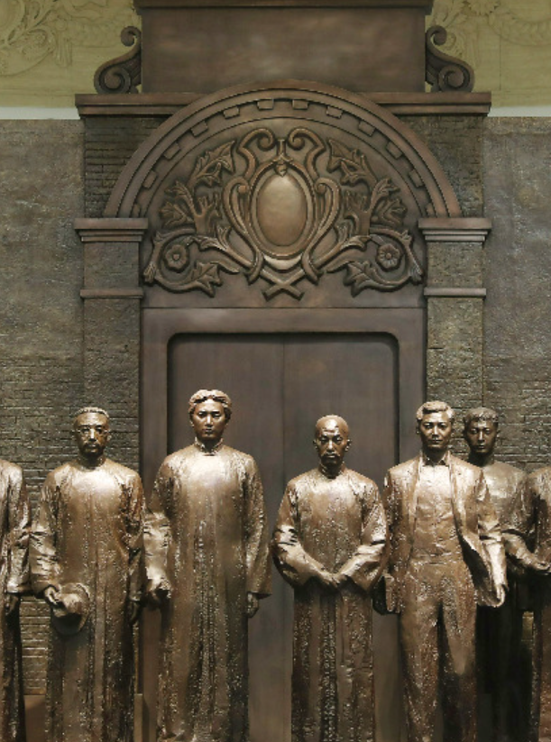
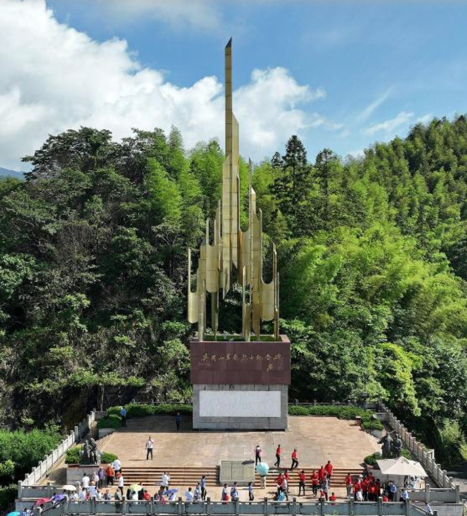
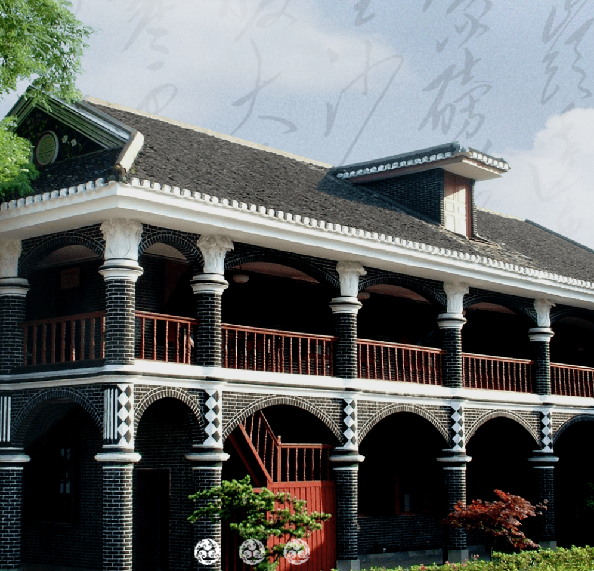
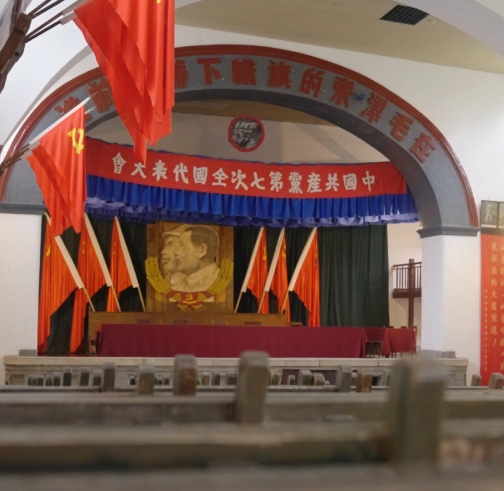
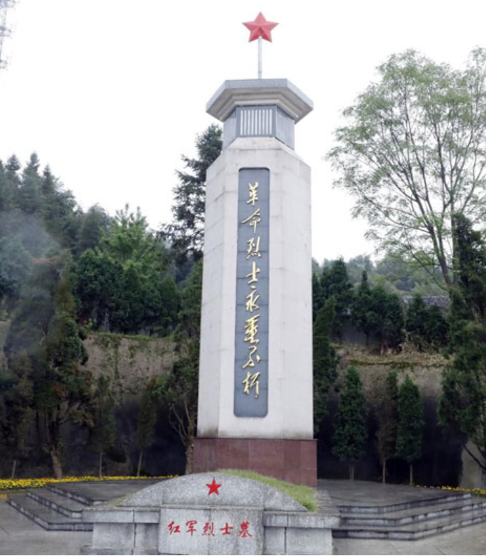
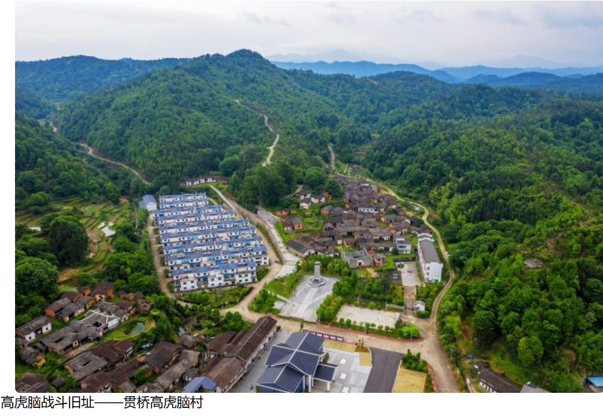
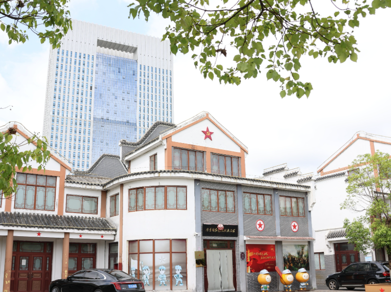

中国共产党人的精神家园，1921年伟大的开端，中国革命的原点。

中国革命的摇篮，星星之火在这里燎原，开辟了农村包围城市的道路。

生死攸关的转折点，确立了毛泽东同志的领导地位，挽救了党和红军。

宝塔山下的十三年，中国革命的落脚点与出发点，指引方向的灯塔。

位于黎川老街，见证了中央苏区东北大门的峥嵘岁月，是土地革命时期的重要指挥中心。

长征前的一场惨烈阻击战，红军将士以血肉之躯迟滞敌军，被誉为悲壮的“血肉磨坊”。

原中央苏区全红县，保留了大量珍贵的红军标语，记录了红一方面军发动群众的辉煌历史。